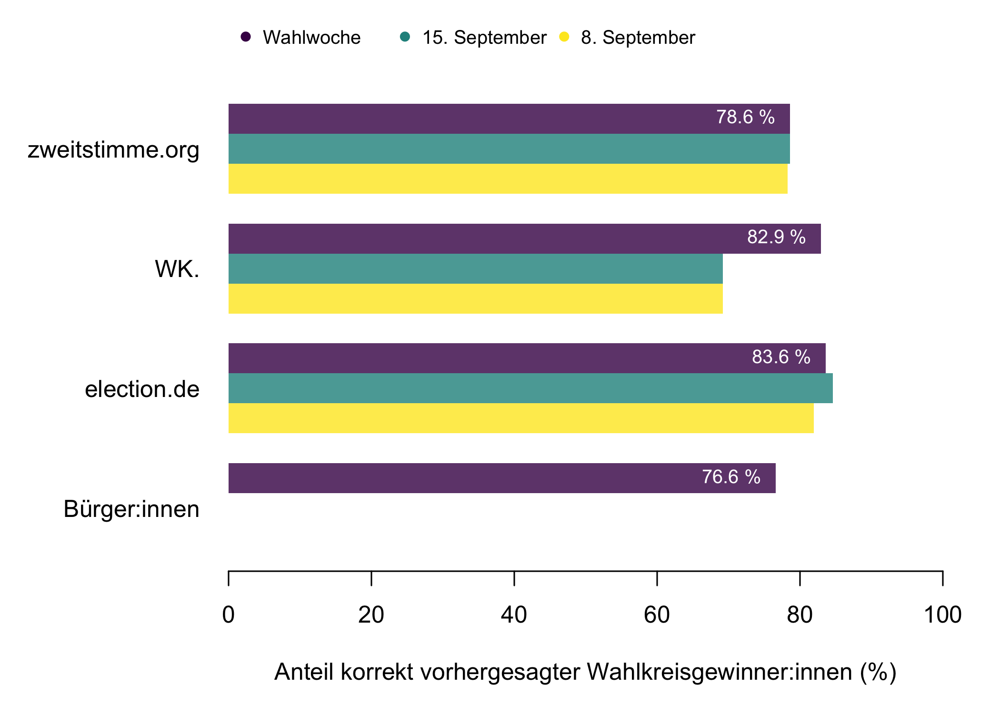
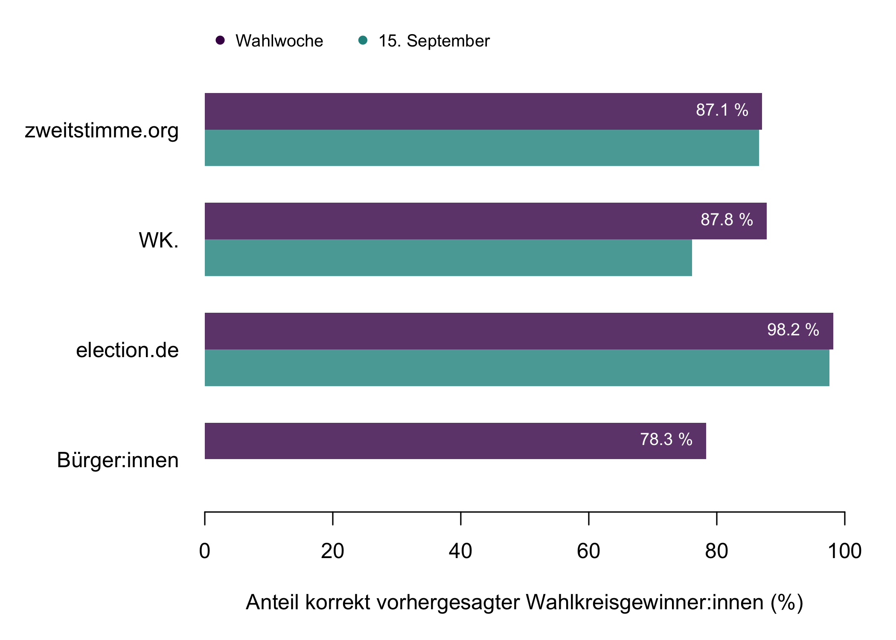

Wer gewinnt die Bundestagswahl 2021 in den Wahlkreisen? Das war 2021 eine besonders spannende Frage. Nicht nur, weil viele Wahlkreise prominent besetzt waren - z. B. 061 Potsdam, wo die Kanzlerkandidat:innen Scholz und Baerbock um das Direktmandat rangen –, in einigen Wahlkreisen ein sehr knapper Ausgang erwartet wurde, die Grünen auf mehr und die AfD auf den Wiedergewinn von Direktmandaten hofften, sondern auch weil die Verteilung der Direktmandate ganz entscheidenden Einfluss auf die Gesamtmandatszahl hat.[1]
Anders als für das bundesweite Zweitstimmenergebnis gibt es für Direktmandate erst seit neuestem auch Prognosemodelle. Für die Bundestagswahl wurden vier Ansätze veröffentlicht: election.de, Wahlkreisprognose (im Folgenden WK.), zweitstimme.org und eine Bürger:innenvorhersage. Die Ansätze basieren auf unterschiedlichen Daten und Methoden. Eine kurze Beschreibung der Ansätze findet sich in der Informationsbox.
Können uns solche Ansätze voraussagen, wer welche Wahlkreise gewinnt? Wussten die Prognosemodelle schon vorher, dass Scholz seinen Wahlkreis gewinnt und Maaßen im Wahlkreis verliert? Um herauszufinden, wie gut die verschiedenen Ansätze funktionieren, vergleichen wir in diesem Beitrag die Wahlkreisvorhersagen mit dem tatsächlichen Ergebnis für die Bundestagswahl 2021.
Wahlkreisvorhersagen
-
Bürger:innenvorhersage ist ein Umfrageprojekt von Mark A. Kayser (Hertie School, Berlin), Arndt Leininger (Technische Universität Chemnitz), Andreas Murr (University of Warwick) und Lukas Stötzer (Humboldt-Universität zu Berlin), das für die Bundestagswahl 2021 ins Leben gerufen wurde. Der Ansatz nutzt statt der üblicherweise erhobenen Wahlintentionen die Erwartungen der Wähler:innen über den Ausgang der Wahl um die Wahlkreisergebnisse vorherzusagen. Dazu wurden mindestens 20 Personen in jedem Wahlkreis befragt, welche Kandidat:in ihrer Einschätzung nach ihren Wahlkreis gewinnen wird. Artikel zur Bürger:innenvorhersage
-
election.de ist eine von Matthias Moehl betriebene Webseite, die unter anderem Wahlkreisvorhersagen publiziert. Über die Methode, wie die Wahlkreisprognosen erstellt werden, gibt es auf der Webseite keine genaueren Auskünfte. www.election.de
-
Wahlkreisprognose (auch WK.) ist eine von Valentin Blumert und Lukas Hornung betriebene Webseite, die neben anderen Dienstleistungen ebenfalls Wahlkreisvorhersagen veröffentlicht. Zur Vorhersage wird ein Modell verwendet, das nach Information der Anbieter mehrere Faktoren wie aktuelle demoskopische Trends aus eigenen Befragungen und weiter Informationen aus dem berücksichtigt. Die genaue methodische Vorgehensweise wird jedoch nicht offengelegt. www.wahlkreisprognose.de
-
Zweistimme.org ist eine von Wissenschaftler:innen der Universität Mannheim, Ludwig-Maximilians-Universität München, Humboldt-Universität zu Berlin und Hertie School, Berlin, betriebene Webseite, die sich der Vorhersage von Bundestagswahlen verschrieben hat. Beteiligt sind Thomas Gschwend und Klara Müller aus Mannheim, Marcel Neunhoeffer aus München und Simon Munzert und Lukas Stötzer aus Berlin. Für die letzte Bundestagswahl wurden die Wahlkreisprognosen unter anderem auf der Webseite der Süddeutschen Zeitung veröffentlicht. Die Methode für die Wahlkreisvorhersage ist in wissenschaftlichen Veröffentlichungen beschrieben. zweitstimme.org
Die Wahlkreisvorhersagen der verschiedenen Ansätze im Vergleich
Wir vergleichen zunächst die Genauigkeit der Prognosen in allen Wahlkreisen, indem wir jeweils prüfen, ob die Partei, der durch den jeweiligen Prognoseansatz die höchste Gewinnwahrscheinlichkeit zugesprochen wird, das Direktmandat tatsächlich auch gewonnen hat.[2] In der Tab. 1 stellen wir den Prozentsatz der korrekt vorhergesagten Wahlkreise da. Es zeigt sich, dass die Performance der unterschiedlichen Ansätze recht nah beieinander liegt – von 76,6 % (oder 229 korrekt vorhergesagte Wahlkreise) bei der Bürger:innenvorhersage bis 83,6 % (250 korrekt vorhergesagte Wahlkreise) bei election.de, die beiden anderen Ansätze liegen dazwischen. Damit schneiden alle Ansätze deutlich besser ab als die naive “Benchmark”, die siegreiche Partei 2017 auch als Gewinnerin 2021 vorherzusagen. Dieser Ansatz kommt auf eine Genauigkeit von 67.6 %. In 202 von 299 Wahlkreisen gewann 2021 die gleiche Partei wie auch schon 2017 das Direktmandat.
| Bürger:innen | election.de | WK. | zweitstimme.org | |
|---|---|---|---|---|
| 8. September | 81.94 | 69.23 | 78.26 | |
| 15. September | 84.62 | 69.23 | 78.60 | |
| Wahlwoche | 76.59 | 83.61 | 82.94 | 78.60 |
In der obigen Tabelle und in Abb. 1 stellen wir für drei der vier Ansätze die Prognosen vom 8. September, 15. September sowie die finale Prognose aus der Wahlwoche dar, denn bei diesen Ansätzen wurden die Prognosen im Laufe des Bundestagswahlkampfes teils noch erheblich angepasst. Das Modell von zweitstimme.org aktualisiert sich mit jeder neuen verfügbaren Umfrage (“Sonntagsfrage”). Die der Bürger:innenvorhersage zugrundeliegende Befragung wurde zwischen dem 6. und 22. September durchgeführt und deren Ergebnisse anschließend am 23. September veröffentlicht. Election.de und zweitstimme.org sagten schon 3 Wochen vor der Wahl den Ausgang der Wahl in den Wahlkreisen relativ genau voraus. Wahlkreisprognose konnte durch ein umfassendes Update der Prognose die Bürger:innenvorhersage noch überholen. Dies bestand im Wesentlichen darin, dass am 8. und 15. September noch viel mehr Wahlkreise der SPD zugesprochen wurden. WK. hat z. B. am 15. September 194 Direktmandate für die SPD erwartet. In der finalen Vorhersage wurden dann nur noch 143 Direktmandate für die SPD erwartet. Ein relativ großer Unterschied innerhalb von nur einer Woche. Am Wahltag hat die SPD 121 Wahlkreise gewonnen. Welche Methodik dahinter steckt oder ob es sich möglicherweise auch um ad-hoc getroffene, nicht modellbasierte Entscheidungen handelt, lässt sich nicht überprüfen, weil WK. als kommerzieller Anbieter das eigene Vorgehen nicht komplett offen legt.

Die interessantesten und überraschendsten Wahlkreise
Auf den Direktmandaten lag 2021 nicht nur aufgrund ihrer grundsätzlichen Bedeutung für die Gesamtmandatszahl des Bundestages, sondern auch weil in vielen Wahlkreisen ein offenes Rennen erwartet wurde, ein besonderes Interesse. Einige Wahlkreise standen 2021 auch aus anderen Gründen im Wahlkampf besonders im Fokus der medialen Öffentlichkeit. Dazu gehörten unter anderem auch Wahlkreis 007 Pinneberg in Schleswig-Holstein. Hier gewann bisher bei jeder Bundestagswahl die Partei das Direktmandat, die dann später auch den Bundeskanzler oder die Bundeskanzlerin stellte.[3] Im Wahlkreis 061 Potsdam – Potsdam-Mittelmark II – Teltow-Fläming trat SPD-Kanzlerkandidat Olaf Scholz gegen die grüne Kanzlerkandidatin Annalena Baearbock an und gewann. Im Wahlkreis 196 Schmalkalden-Meiningen – Hildburghausen – Sonneberg verlor Hans-Georg Maaßen (CDU) gegen Frank Ullrich (SPD). Wir stellen dies Wahlausgänge in diesen Wahlkreise daher in (siehe Tab. 2) den Prognosen der verschiedenen Ansätze gegenüber. Während die SPD schon 2017 in Potsdam – Potsdam-Mittelmark II – Teltow-Fläming vorne lag, gewann in Pinneberg 2017 noch die CDU das Direktmandat und Angela Merkel begann ihre vierte Legislaturperiode als Kanzlerin. Beide Wahlausgänge wurden von allen Ansätzen einhellig so vorhergesehen. In Schmalkalden-Meiningen – Hildburghausen – Sonneberg, wo die CDU 2017 das Direktmandat noch mit 33,5 % und mit über 10 Prozentpunkten Vorsprung vor der AfD gewinnen konnte, sah nur zweitstimme.org den Sieg des SPD-Kandidaten Frank Ullrich nicht voraus. Der Ansatz von zweistimme.org beruht darauf, den Trend in den Sonntagsfragen auf die Erststimmenergebnisse umzurechnen. Im Wahlkreis 096 verlor die CDU jedoch deutlich stärker als im Bund, während die SPD ihren Erststimmenantel mehr als verdoppeln konnte, was sicherlich auch an der Kandidatur des umstrittenen ehemaligen Verfassungsschutzchefs Hans-Georg Maaßen liegen dürfte und an der folgenden Koordination einer Erststimmen-Kampagne für Frank Ullrich.[4]
| Wahlkreis | Gewinner:in | Bürger:innen | election.de | WK. | zweitstimme.org |
|---|---|---|---|---|---|
| 007 Pinneberg | SPD | SPD | SPD | SPD | SPD |
| 061 Potsdam – Potsdam-Mittelmark II – Teltow-Fläming II | SPD | SPD | SPD | SPD | SPD |
| 196 Suhl – Schmalkalden-Meiningen – Hildburghausen – Sonneberg | SPD | SPD | SPD | SPD | CDU |
Der Ausgang in diesen Wahlkreisen war zwar von besonderem öffentlichen Interesse, aber nicht unbedingt in allen Fällen überraschend. Wie gut aber schnitten die unterschiedlichen Ansätze dabei ab, Wechsel eines Direktmandats von einer zu einer anderen Partei vorherzusagen? In 97 Wahlkreisen gewann 2021 eine andere Partei das Direktmandat als noch 2017. Diese Wahlkreise sind von besonderem Interesse, wenn es darum geht, die Qualität der unterschiedlichen Prognoseansätze einzuschätzen. In Tab. 3 zeigt sich eine deutlich heterogenere Performanz der unterschiedlichen Ansätze bei der Vorhersage eines Wechsels von Direktmandaten von einer zu einer anderen Partei. Vorne liegen hier relativ nahe beeinander election.de und Wahlkreisprognose. Es zeigt sich also, dass Experteneinschätzungen, aber auch ein rein modellbasierter Ansatz wie bei zweitstimme.org, den Einschätzungen von im Wahlkreis lebenden Befragten überlegen zu sein scheint.
| Bürger:innen | election.de | WK. | zweitstimme.org | |
|---|---|---|---|---|
| 8. September | 58.76 | 74.23 | 47.42 | |
| 15. September | 73.20 | 74.23 | 50.52 | |
| Wahlwoche | 42.27 | 64.95 | 65.98 | 54.64 |
In der obigen Tabelle sowie auch in Abb. 2 weisen wir wieder die Prognose vom 8. September, 15. September und aus der Wahlwoche aus. Während ein Update bei zweitstimme.org und election.de die Genauigkeit der Prognose verbesserten, war bei WK. genau das Gegenteil der Fall.
Auch dort wo die Prognosen daneben lagen, bieten sie dennoch einen Erkenntnisgewinn. Sie helfen nämlich, die großen Überraschungen der Bundestagwahl 2021 zu identifizieren. Tab. 4 listet 13 Wahlkreise auf, in denen alle Prognoseansätze falsch lagen. Die großen Überraschungen der Bundestagswahl 2021 waren eindeutig der Hinzugewinn von 15 neuen Direktmandaten durch Bündnis 90/Die Grünen in großstädtischen Wahlkreisen (dabei waren insbesondere die Siege in Hamburg, Münster und Bonn überraschend) und, dass die AfD nun 10 von 16 sächsischen Direktmandaten hält.
| Wahlkreis | Gewinner:in | Bürger:innen | election.de | WK. | zweitstimme.org | Gewinner:in 2017 |
|---|---|---|---|---|---|---|
| 001 Flensburg – Schleswig | GRUENE | SPD | CDU | SPD | CDU | CDU |
| 008 Segeberg – Stormarn-Mitte | SPD | CDU | CDU | CDU | CDU | CDU |
| 019 Hamburg-Altona | GRUENE | SPD | SPD | SPD | SPD | SPD |
| 020 Hamburg-Eimsbüttel | GRUENE | SPD | SPD | SPD | SPD | SPD |
| 071 Anhalt | AFD | CDU | CDU | CDU | CDU | CDU |
| 091 Rhein-Erft-Kreis I | CDU | SPD | SPD | SPD | SPD | CDU |
| 096 Bonn | GRUENE | CDU | SPD | SPD | SPD | SPD |
| 129 Münster | GRUENE | CDU | SPD | SPD | CDU | CDU |
| 163 Chemnitzer Umland – Erzgebirgskreis II | AFD | CDU | CDU | CDU | CDU | CDU |
| 165 Zwickau | AFD | CDU | CDU | CDU | CDU | CDU |
| 190 Eisenach – Wartburgkreis – Unstrut-Hainich-Kreis | AFD | CDU | CDU | CDU | CDU | CDU |
| 192 Gotha – Ilm-Kreis | AFD | SPD | SPD | SPD | CDU | CDU |
| 203 Trier | SPD | CDU | CDU | CDU | CDU | CDU |
Die Wahlkreisvorhersagen in “nicht offenen” Wahlkreisen
Neben der Vorhersage von Gewiner:innen in den Wahlkreisen geben die Urheber:innen der vier Ansätze auch an wie sicher sie sich bei ihrer Prognose sind. Die Bürger:innenvorhersage klassifiziert Wahlkreise als “Kopf-an-Kopf”-Rennen, wenn zwei Kandidierenden von der jeweils gleichen Anzahl an Befragten als wahrscheinlichste Gewinner:innen identifiziert werden. election.de teilt die Vorhersagen dabei drei in Kategorien ein (Sicher, Wahrscheinlich, Vorsprung), während WK. (Sicher, Eher sicher, Eher unsicher und Too-close-to-call) und zweitstimme.org (Sehr wahrscheinlich, Wahrscheinlich, Möglich, Offen) jeweils vier Katgorien verwenden. Darüberhinaus geben election.de und zweitstimme.org Wahrscheinlichkeiten für alle Kandidierenden in jedem Wahlkreis an. Die Vorhersage von solchen offenen (“too close to call”) Wahlkreisen ist natürlich von besonderem Interesse für Kampagnen. Gleichzeitig ist das Rennen in diesen Wahlkreisen aus Sicht der Vorhersagen so knapp, dass die Verantwortlichen der einzelenen Vorhersagen sich nicht festlegen wollten. Für eine faire Evaluation sollte man also auch nur Wahlkreise berücksichtigen, für die auch eine Vorhersage getroffen wurde. Tab. 5 und Abb. 3 fassen die Ergebnisse zusammen.
| Bürger:innen | election.de | WK. | zweitstimme.org | |
|---|---|---|---|---|
| 15. September | 97.59 | 76.13 | 86.61 | |
| Wahlwoche | 78.32 | 98.17 | 87.78 | 87.07 |

Insgesamt wurden in der Bürger:innenprognose nur 13 Wahlkreise als “Kopf-an-Kopf” eingeschätzt. Für die Wahlkreise mit einer Vorhersage durch die Bürger:innenprognose ergibt sich damit eine Genauigkeit von 78.3 % oder 224 von 286 korrekt vorhergesagten Wahlkreisen.
Wir betrachten für die folgenden Auswertungen die von election.de als “Vorsprung” bezeichneten Wahlkreise als offen. In der Woche vor der Wahl hat election.de 135 Wahlkreise mit einem “Vorsprung” für eine Partei eingeschätzt. Für die Wahlkreise mit einer Vorhersage von als “wahrscheinlich” oder “sicher” bei election.de ergibt sich damit eine Genauigkeit von 98.2 % oder 161 von 164 korrekt vorhergesagten Wahlkreisen. Eine Woche zuvor am 15. September hat election.de 133 Wahlkreise mit “Vorsprung” eingeschätzt. Für die “sicheren” und “wahrscheinlichen” Wahlkreise mit einer Vorhersage von election.de ergibt sich am 15. September eine Genauigkeit von 97.6 % oder 162 von 166 korrekt vorhergesagten Wahlkreisen.
In der Woche vor der Wahl hat WK. 78 Wahlkreise als “Too-close-to-call” eingeschätzt. Für die Wahlkreise mit einer Vorhersage von WK. ergibt sich damit eine Genauigkeit von 87.8 % oder 194 von 221 korrekt vorhergesagten Wahlkreisen. Eine Woche zuvor war sich WK. überraschenderweise sicherer (weniger offene Wahlkreise) als unmittelbar vor der Wahl und hat am 15. September nur 56 Wahlkreise als “Too-close-to-call” eingeschätzt. Für die Wahlkreise mit einer Vorhersage von WK. ergibt sich am 15. September eine Genauigkeit von 76.1 % oder 185 von 243 korrekt vorhergesagten Wahlkreisen.
Zweitstimme.org hat in der Woche vor der Wahl 67 Wahlkreise als “Offen” eingeschätzt. Für die Wahlkreise mit einer Vorhersage von zweitstimme.org ergibt sich damit eine Genauigkeit von 87.1 % oder 202 von 232 korrekt vorhergesagten Wahlkreisen. Eine Woche zuvor am 15. September hat zweitstimme.org 75 Wahlkreise als “Offen” eingeschätzt. Für die Wahlkreise mit einer Vorhersage von zweitstimme.org ergibt sich damit eine Genauigkeit von 86.6 % oder 194 von 224 korrekt vorhergesagten Wahlkreisen.
Gesamtüberblick
Die durchsuch- und sortierbare Tab. 6 gibt einen Überblick über den Ausgang in allen Wahlkreisen und die Prognosen für alle 299 Wahlkreise.
[1] Eine anschauliche Erläuterung des deutschen Wahlrechts und warum die Gesamtmandatsanzahl vom Wahlergebnis abhängt findet sich bei der Bundeszentrale für politische Bildung.
[2] Die Bürger:innenvorhersage wies manche Wahlkreise, wo zwei Parteien in der Prognose gleich auf lagen, als “Kopf-an-Kopf”-Rennen aus. Um zu hier einer eindeutiger Prognose zu kommen, die sich mit dem Wahlergebnis vergleichen lässt, berücksichtigen wir die ebenfalls in diesem Ansatz berücksichtigten erwarteten Erstimmenanteile.
[4] So hat zum Beispiel Campact zur Wahl von Frank Ullrich aufgerufen. https://blog.campact.de/2021/08/wahlkreis-196-ullrich-maassen/